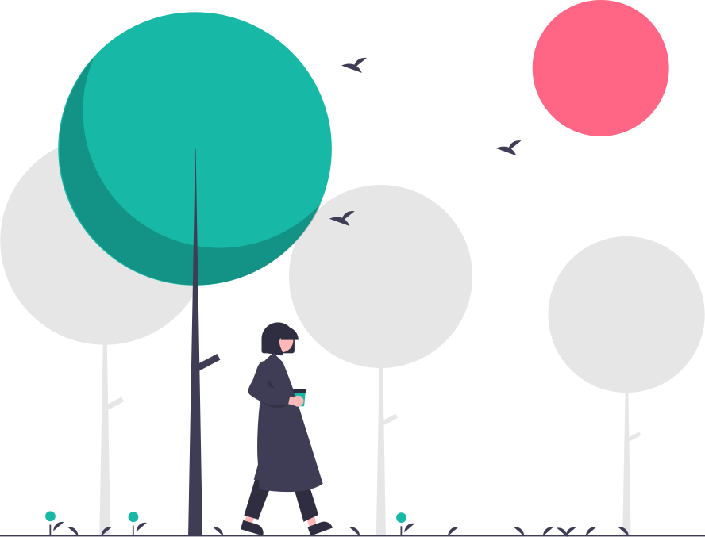

Exploring relationships between indoor air quality, outdoor air quality, and occupancy practices in Passive Houses.

In an effort to reduce carbon footprints, Passive House standards promote airtight construction, robust thermal insulation, and efficient ventilation systems. This approach aims to minimize heat loss while maintaining indoor comfort. However, an ultra-sealed building envelope can make it challenging to balance indoor and outdoor air quality (I-O AQ), potentially trapping pollutants inside if ventilation is insufficient or poorly managed.
To address these concerns, we’re deploying both indoor and outdoor monitors in a Passive House in Leeds, measuring common pollutants such as NOx, CO2, PM2.5, humidity, and ultrafine particles (UFPs). We will also collect data on occupant practices, like cooking and maintenance of Mechanical Ventilation with Heat Recovery (MVHR) systems. Our goal is to explore how human behavior interacts with advanced building features—particularly filtering, heat recovery, and airtightness—to influence indoor air quality.
This short-term pilot project will create the foundation for a larger study spanning multiple dwelling types and regions. By identifying effective experimental protocols and forging stakeholder relationships (including property developers and residents), we hope to inform best practices that simultaneously improve energy efficiency, thermal comfort, and occupant health.
Initial setup, sensor deployment, occupant diary design
Data collection & occupant activity logging
Data analysis, stakeholder feedback, and next-steps planning
SCAPE, University of Leeds
Energy Transition & Net Zero Institute
Civil Engineering, University of Leeds
Early Academic Career
Consultant & Passive House Occupant
Participant/Stakeholder
NAQTS
Project Partner
Total Requested: £2,949
This pilot project lays groundwork for co-designed research, bridging occupant practices, air quality, and energy-efficient building standards. We leverage in-kind contributions from participants and reduced equipment rental to maximize impact at minimal cost.
This work unites experts in indoor and outdoor air quality from different academic units, as well as key industry and community stakeholders (CITU, NAQTS, occupant partners). The project initiates crucial cross-sector relationships, setting the stage for larger future collaborations.
Few studies have tackled how Passive House features and occupant behavior dynamically influence I-O AQ. By measuring ultrafine particles and capturing occupant diaries, we generate novel data that can improve building and ventilation designs, plus associated policy.
Airtightness and MVHR systems are key to low-carbon housing. Understanding how these systems perform under real conditions and occupant usage supports broader transitions to sustainable, high-comfort residences that protect occupant health.
The project team spans career stages and actively plans to co-design future research protocols with participants. This ensures minimal burden on residents while capturing inclusive, real-world data. We will expand to diverse housing types in subsequent phases.
Findings can inform building standards and ventilation guidelines, influencing both policy and practice. Collaboration with developers (CITU) and occupant stakeholders amplifies real-world relevance. In the longer term, we aim to extend these methods across a wider range of building types and communities, helping shape healthier, more sustainable living environments.
Interested in air quality, occupant behavior, and energy-efficient homes? Join our network to stay updated on this pilot's findings, workshops, and future funding opportunities.